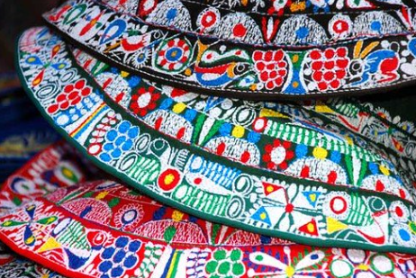

El bordado Collagua: Patrimonio vivo de los Andes
Cómo los bordados del Valle del Colca cuentan 500 años de historia andina en cada puntada. El Ministerio de Cultura declaró esta técnica Patrimonio Cultural Inmaterial de la Nación en 2022.
Cada diseño geométrico que aparece en una pollera Collagua tiene un significado específico: los rombos representan la dualidad andina, las flores a la Pachamama, y el cóndor al mensajero entre el mundo humano y el divino.
Leer artículo completo →
Tintes naturales: los colores secretos del Colca
Cochinilla, índigo y muña andina: los pigmentos que hacen únicos los bordados.

Moda sostenible: el mundo mira hacia los Andes
El mercado europeo de moda ética crece 25% anual. Los bordados del Colca lideran.

Comercio justo: cómo cada compra cambia una vida
El modelo sin intermediarios permite que el 92% del precio llegue al artesano.
Más artículos
 Guía de compra
Guía de compraCómo elegir una pollera Collagua auténtica
Guía práctica para identificar bordados artesanales genuinos y diferenciarlos de imitaciones industriales.
Leer más →
HistoriaLos símbolos del bordado andino y su significado
Cóndores, flores y geometría: un diccionario visual de los iconos del Valle del Colca.
Leer más → Viaje
ViajeGuía para visitar el Valle del Colca y sus artesanas
Comunidades, talleres abiertos y experiencias culturales en Chivay, Yanque y Cabanaconde.
Leer más →